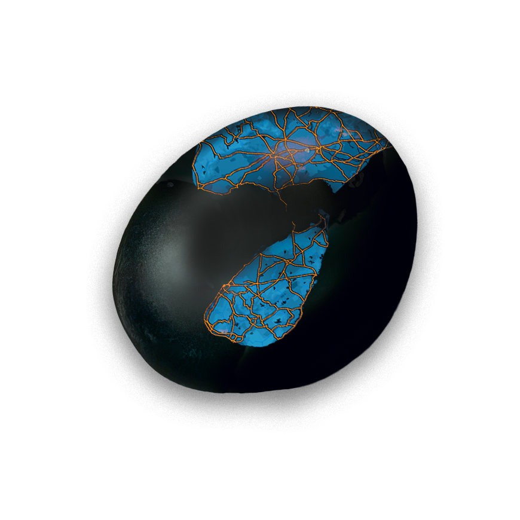
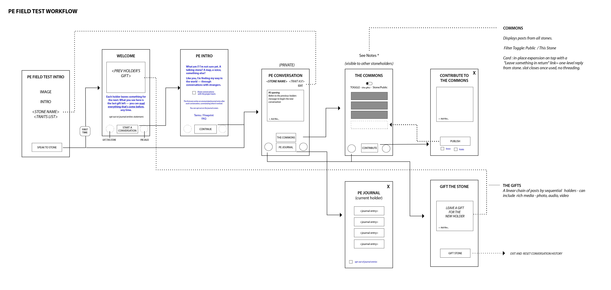

A common stone, transformed into a personal companion with a voice — passed hand to hand, accumulating memory and provenance. This site holds the complete IA/UXD documentation for the field-test MVP and its account layer: the original prototype, the workflow it was built from, eight working documents, and the holder journey map that ties them together.
Six stages from first QR scan to lifelong follower. Every stage carries what the holder does, thinks, and touches; what it leaves behind; what we want to learn; what it takes to build; and where it stands today.
Open the mapThe working HTML prototype of the field-test MVP — from the landing page a QR scan resolves to, through conversation, commons, and journals, to gifting the stone onward. Fully linked; walk it as a holder would.
The original wireframe workflow the prototype implements — screen boxes, routing, and the notes that define the Commons reply slot and the Gifts chain. The documentation set records where the prototype has since moved past it (My Journal is a post-V5 addition).

How to use the set, cross-reference id system (F/M/A/D/P/R/T), phase status, and the open product calls.
Canonical vocabulary — Stone, Emissary, Holder, Pairing, Gift, Claim, the privacy rungs. Change terms here first.
What the prototype actually contains: screens, nav states, components, both design-token sets, flags F1–F8.
Two contexts (Stone / Collection), full site map with missing and new account screens, gating matrix, URL routes.
Flows A–G: first touch, return, commons, gift + claim, magic-link verify, afterlife, notifications. Build order.
The privacy ladder, the pairing-centric entity model, client-side state, state machines, what claiming transfers.
Trigger matrix T1–T6, anti-triggers, email-first channel strategy, opt-in surface, field-test success metrics.
Platform realities: magic-link × PWA session split, iOS storage eviction, offline scope, QR binding. Decisions P1–P7.
The requirements checklist any backend must meet; build-vs-reuse evaluation of the existing stone-maps backend.
Every markdown source doc (00–07), the holder journey map, and the original PE field-test workflow image — bundled as one clean download. Or clone the whole documentation set, source included, from its public repository.
{kind=link}